Prediction with Action: Visual Policy Learning via Joint Denoising Process
1. 论文速览
一句话概括：这篇论文提出 PAD，把“未来图像预测”和“机器人动作生成”放进同一个扩散去噪过程里联合学习，不再走“先生成目标图，再训练低层策略”的两阶段路线。
核心结论：联合去噪让动作头直接共享视觉预测模型里的物理表征；再配合 BridgeData-v2 这类大规模视频数据共训练，PAD 在 MetaWorld 和真实 Panda 操作任务上都明显优于 Diffusion Policy、SuSIE、RT-1、RT-2*、GR-1。
论文要解决什么
视觉模仿学习数据昂贵、规模小，而互联网视频包含大量“物体如何运动”的物理先验。问题在于，以往方法通常只把视频生成模型当作一个外部工具，先合成目标图，再交给单独的策略去学动作，预测与控制之间耦合太弱。
作者的方法抓手
用 Diffusion Transformer 把当前 RGB、机器人状态、文本指令，以及可选深度一起编码成 token；模型同时预测未来图像、未来动作、未来深度，在同一个 latent diffusion objective 下训练。
最重要的结果
MetaWorld 50-task 平均成功率达到 72.5%，相对最强基线 GR-1 的 57.4% 有明显提升；真实任务 seen-task 平均成功率 PAD 为 0.72，加入深度后到 0.78。
阅读时要注意的点
摘要写“single policy solve 41 tasks”，但正文与表格一直按 MetaWorld 50 tasks 统计；附录又说明 handle-pull-side-v2 和 handle-pull-v2 未列细项，因为原始专家本身成功率低。这是论文内部一个口径不完全一致的地方。
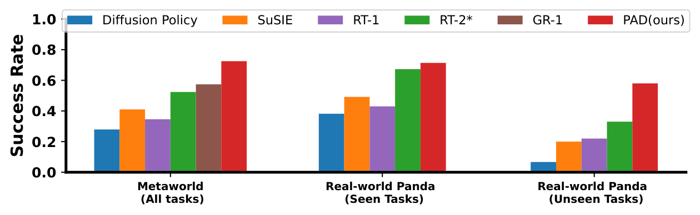
2. 动机
作者的出发点很直接：预测与行动本质上共享同一套物理规律。一个能够从图像里预测“接下来会发生什么”的模型，理应也更适合决定“现在该怎么动”。问题是，已有机器人工作大多把这两件事拆开做，预测模型最多给策略提供目标图像，而不会把自己学到的物理表征直接暴露给动作生成过程。
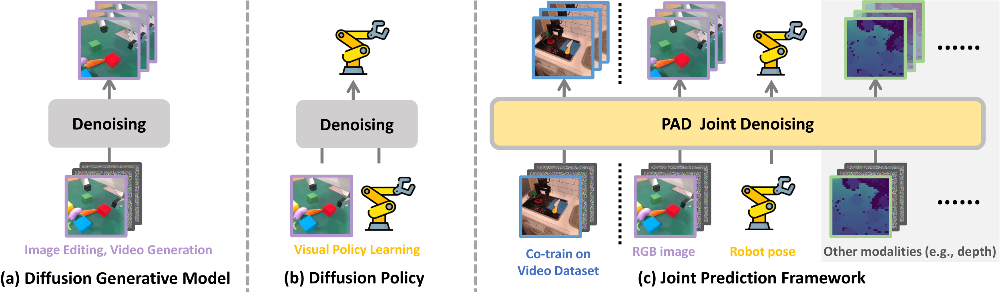
为什么两阶段不够
SuSIE、UniPi 一类方法先生成未来图像，再学逆动力学或低层策略。这种接口太窄，动作头只能看到一张中间结果，拿不到扩散模型在中间层里编码的物理先验。
为什么选 DiT
作者认为 U-Net 更偏纯图像生成，而 DiT 用 token 拼接更适合把图像、动作、深度、文本放在一个自注意力序列里做联合建模，也更方便处理模态缺失。
3. 相关工作梳理
论文把相关工作放在实验后面，但逻辑上可以提前整理成三条主线。
| 方向 | 代表方法 | 核心思想 | PAD 的区别 |
|---|---|---|---|
| 预训练模型直接做机器人 | RT-1, RT-2* | 把视觉语言 backbone 直接适配成动作预测器 | PAD 不直接依赖超大 VLM，而是把“未来预测”当作动作学习的结构化辅助信号。 |
| 扩散式动作策略 | Diffusion Policy | 在动作空间上去噪生成控制序列 | PAD 不只去噪动作，还同步去噪未来图像和可选深度，监督更强。 |
| 未来图像辅助控制 | SuSIE, UniPi, GR-1 | 用生成或自回归预测未来，再间接帮助动作 | PAD 不是串行两阶段，而是单个 DiT 内的联合去噪；与 GR-1 相比，作者强调 diffusion 生成图更精细。 |
作者想占据的技术位置
PAD 试图站在“扩散动作策略”和“未来视觉预测”之间：既保留 diffusion policy 的多模态动作建模能力，又把互联网视频学到的物理变化模式通过联合损失注入策略。
4. 方法详解
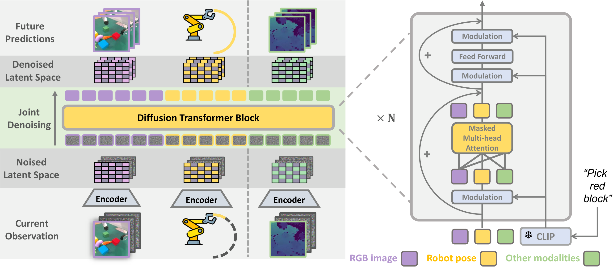
4.1 问题定义
机器人数据记为 D_robot，每条样本含当前图像序列、语言指令和轨迹；视频数据记为 D_video，只有图像，没有机器人动作。PAD 的目标是在机器人数据稀缺时，通过和视频数据共训练，提升视觉策略学习效果。
4.2 输入、输出与 token 化
| 符号 | 含义 |
|---|---|
| $c_I, c_A, c_E, l$ | 当前 RGB、当前机器人状态、当前深度、文本指令 |
| $x_I^{1:k}, x_A^{1:k}, x_E^{1:k}$ | 未来 $k$ 步的 RGB、动作、深度目标 |
| $\varepsilon_I, \varepsilon_A, \varepsilon_E$ | 不同模态编码器；图像是冻结 VAE，动作是 MLP，深度是下采样+tokenize |
| $t_I, t_A, t_E$ | 不同模态映射后的 token 序列 |
实现层面，PAD-XL/2 对 256×256 图像先用冻结 VAE 编到 32×32×4 latent，再按 2×2 patchify 成 256 个图像 token；动作未来序列被编码成 1 个 action token。如果有深度，则把 32×32×1 深度图按 8×8 切成 16 个深度 token。文本由冻结 CLIP 编码。
4.3 联合条件去噪
PAD 不是先预测一张未来图再去求动作，而是对每种未来模态都构造“条件 latent + 噪声 latent”的拼接输入。例如图像模态里，当前观测 latent εI(cI) 和未来 k 帧噪声 zI_t 在通道维拼接，动作与深度也是同理。
关键数学对象
扩散逆过程按条件分布
$$ p(z_{t-1}\mid z_t, c)=\mathcal{N}\left(z_{t-1}; \sqrt{\bar{\alpha}_{t-1}}\mu_\theta(z_t,t,c),(1-\bar{\alpha}_{t-1})\mathbb{I}\right) $$
其中
$$ \mu_\theta(z_t,t,c)=\frac{z_t-\sqrt{1-\bar{\alpha}_t}\,\epsilon_\theta(z_t,t,c)}{\sqrt{\bar{\alpha}_t}}. $$
训练时同时最小化图像、动作、深度三项扩散损失：
$$ \mathcal{L}(\theta)=\lambda_I\mathcal{L}_{diff}^{I}+\lambda_A\mathcal{L}_{diff}^{A}+\lambda_E\mathcal{L}_{diff}^{E}. $$
直觉上，PAD 逼着同一个 DiT 同时解释“场景接下来长什么样”和“机器人接下来怎么动”，这就是论文的结构性偏置来源。
4.4 DiT 为什么能兼容缺失模态
视频数据没有动作，真实机器人数据可能有深度，MetaWorld 又没有深度。PAD 的做法是把所有模态 token 长度统一到总长度，再用 self-attention mask 把 padding 位置屏蔽掉，只保留有效输出。这样同一套参数就能同时吃 D_video 和 D_robot。
4.5 训练与执行细节
λI 全程维持 1.0；λA 和 λE 在 100k 步内从 0 线性拉到 2.0，避免刚开始动作头抢跑破坏已有图像先验。k=3，相邻未来帧间隔 4；每轮用 75 步 DDIM 采样，同时得到 3 步未来图像和动作，只执行第一步动作，再进入下一轮闭环。5. 实验
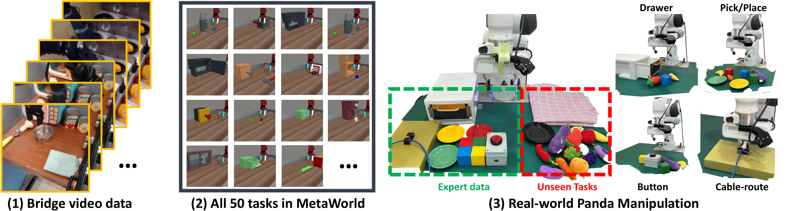
5.1 实验设置
MetaWorld
每个任务收集 50 条轨迹，只用 corner2 视角，状态为 4 维末端位置+夹爪状态；不使用深度。作者强调与此前“每任务一个策略”的设定不同，这里训练的是单个文本条件策略。
真实 Panda
任务涵盖按按钮、理线、抓取、放置、开关抽屉等；每个任务收集 200 条轨迹，使用手腕相机，机器人状态为 7 维。作者还做了 OOD 测试，加入陌生水果蔬菜玩具和新背景。
比较方法包括 Diffusion Policy、SuSIE、RT-1、RT-2*（作者按 InstructBLIP-7B 复现）和 GR-1。所有方法都按“单个文本条件视觉策略覆盖整个任务域”的口径训练。
5.2 主结果
| 场景 | 指标 | 最强基线 | PAD | 增益解读 |
|---|---|---|---|---|
| MetaWorld | 50-task 平均成功率 | GR-1: 57.4% | 72.5% | 比最强基线高 15.1 个点；相对提升约 26.3% |
| 真实 Panda seen tasks | 平均成功率 | RT-2*: 0.69 | 0.72 | 纯 RGB 版本略高于 RT-2*；若加入深度，PAD-Depth 达到 0.78 |
| 真实 Panda generalization | 未见任务/物体泛化 | 图示比较 | PAD 最强 | 摘要声称相对最强基线有 28.0% 成功率提升 |
| MetaWorld 代表性难任务 | GR-1 | RT-2* | PAD |
|---|---|---|---|
| assembly-v2 | 0.64 | 0.24 | 0.88 |
| basketball-v2 | 0.08 | 0.08 | 0.84 |
| coffee-pull-v2 | 0.52 | 0.68 | 0.80 |
| stick-push-v2 | 0.60 | 0.12 | 0.96 |
| door-lock-v2 | 0.60 | 0.40 | 0.88 |
5.3 泛化、共训练和多模态扩展
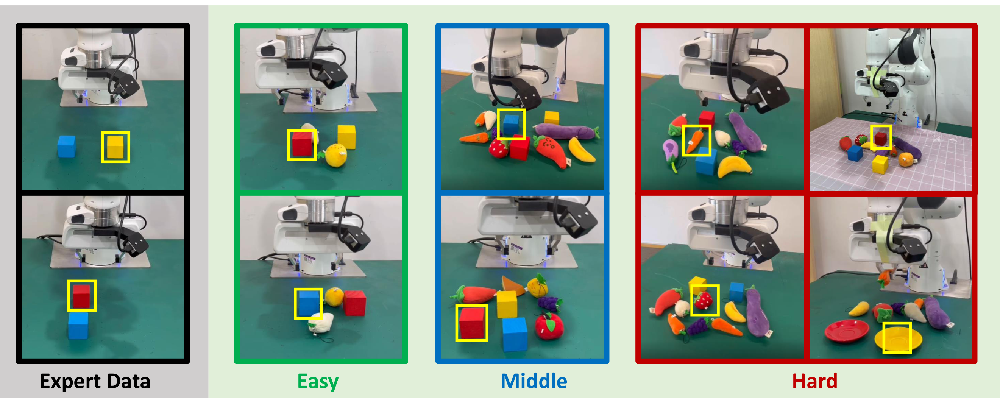
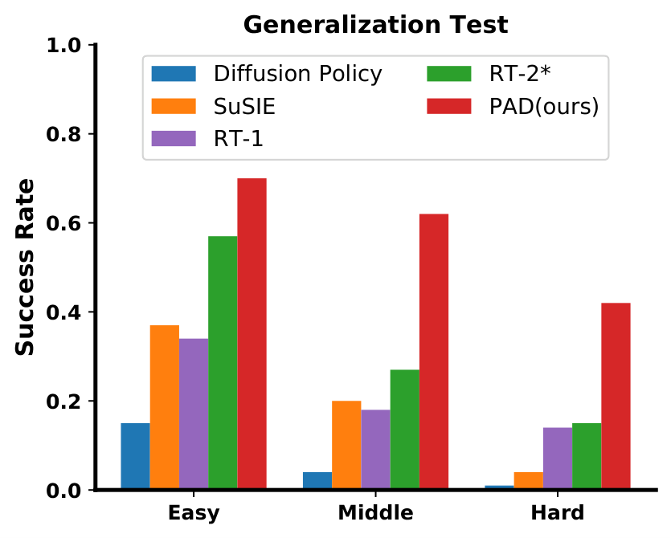
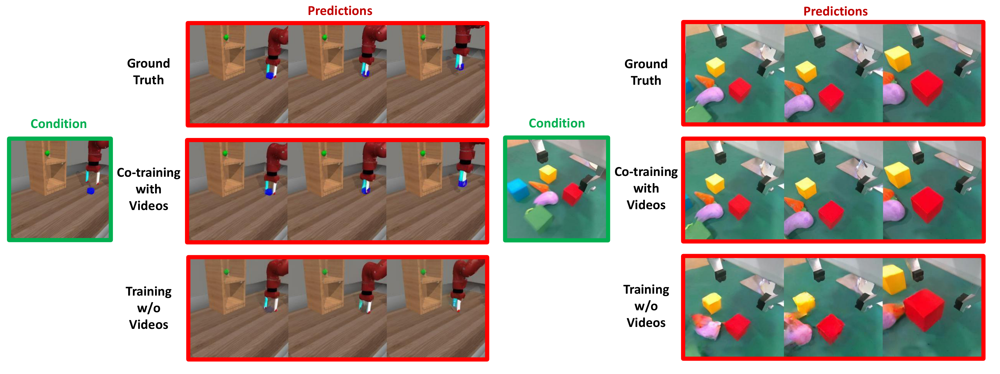
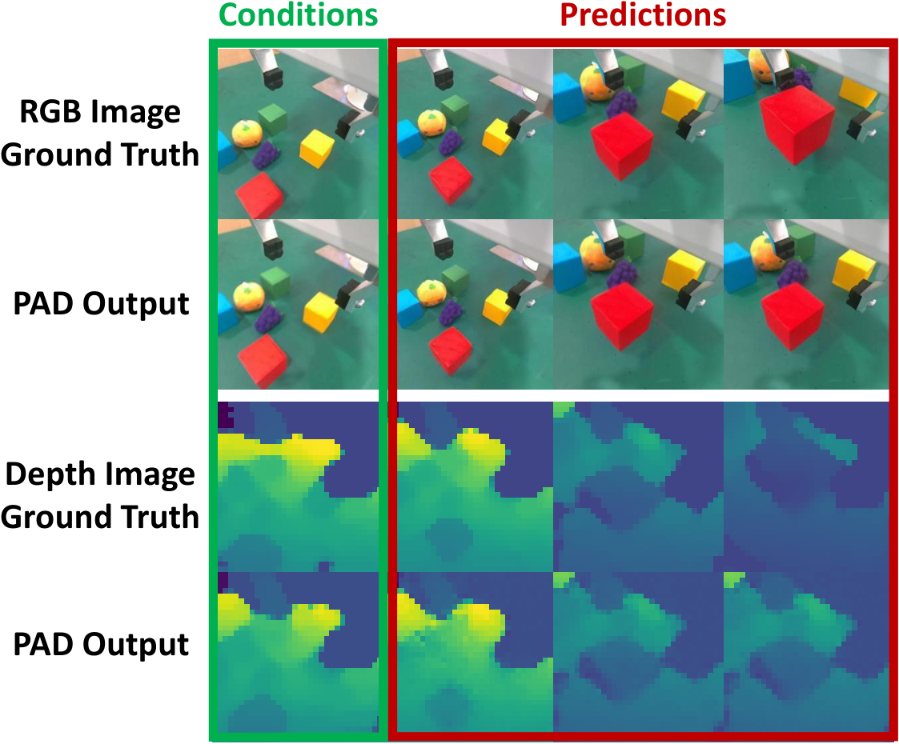
5.4 Scaling 分析
| 模型 | 参数量 | Gflops | MetaWorld 平均成功率 |
|---|---|---|---|
| PAD-B/2 | 128M | 22.5 | 62.4% |
| PAD-L/2 | 449M | 79.1 | 68.4% |
| PAD-XL/4 | 661M | 29.5 | 64.5% |
| PAD-XL/8 | 661M | 7.7 | 48.2% |
| PAD-XL/2 | 661M | 119.1 | 72.5% |
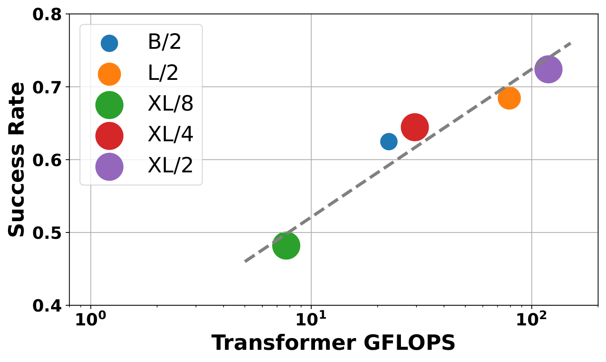
6. 分析与讨论
6.1 这篇论文最有价值的地方
把“预测”从外部工具变成内部监督
过去很多方法只是把未来图像当作中间产物；PAD 的价值是让动作头在同一个去噪网络里共享视觉未来建模的隐变量。这比“先生成、后控制”更像真正的多任务表征学习。
视频数据终于有了清晰接入口
机器人数据缺动作标签之外的大规模视频，一直很难直接喂给控制模型。PAD 用 attention mask 解决了模态缺失问题，让纯视频也能对策略产生训练价值。
6.2 结果为什么站得住
这篇论文的说服力主要来自三组互相咬合的证据：
| 证据 | 观察 | 支撑的论点 |
|---|---|---|
| PAD vs 基线 | MetaWorld、真实任务都领先 | 联合去噪结构本身有效 |
| PAD w/o img | MetaWorld 平均从 72.5% 掉到 43.6% | 未来图像预测不是装饰，而是关键监督源 |
| PAD w/o co-train | MetaWorld 平均掉到 59.2% | 互联网视频共训练确实提供了额外帮助 |

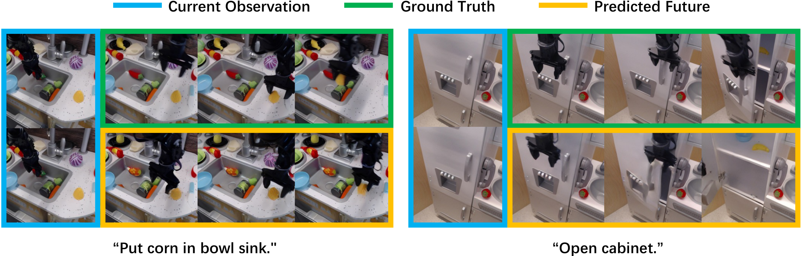
6.3 局限与可疑点
推理开销不低
每次控制要做 75 步 DDIM，同时还要生成未来图像和动作。作者自己也在结论里承认控制频率不高，这对高速闭环控制会是硬约束。
因果链条还不是完全闭合
论文把收益归因于“更好的未来图像预测带来更好的动作”，这个解释合理，但目前证据还是相关性为主。若能进一步做中间表征或 teacher forcing 实验，因果关系会更扎实。
任务口径有轻微不一致
摘要写 41 tasks，主体写 50 tasks，附录又说明有两个 handle-pull 任务没给出详细项。这不影响主要趋势，但会影响读者对“到底统计了多少任务”的第一印象。
真实世界规模仍有限
真实实验是单个 Panda 平台、多类桌面操作。虽然效果不错，但距离开放场景的泛化机器人还差很远，尤其没有测试复杂接触和高频动力学任务。
6.4 附录里值得保留的信息
Appendix 附录没有额外理论推导，但提供了几个对复现实验判断很关键的细节：图像 latent 形状、depth token 数、各种模型大小、完整的 MetaWorld baseline 明细，以及真实任务中 expert / unseen task 的样例图。这些信息已经吸收到上面的“方法细节”和“实验分析”里。
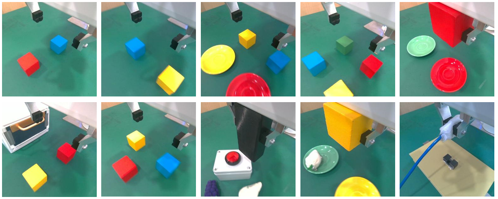
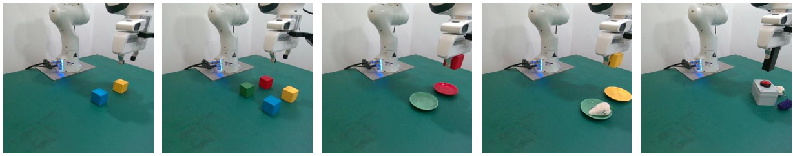
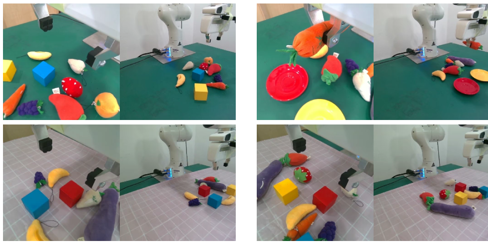
我的总体判断
PAD 的关键贡献不是“又做了一个更大的 diffusion policy”，而是把未来视觉预测和动作生成绑定进同一个训练目标里，并给视频共训练提供了一个非常自然的接口。对“如何把互联网视频先验注入机器人控制”这个问题，这篇论文给出的结构答案是清晰且有说服力的。它的主要短板则在于推理成本和真实世界验证规模。